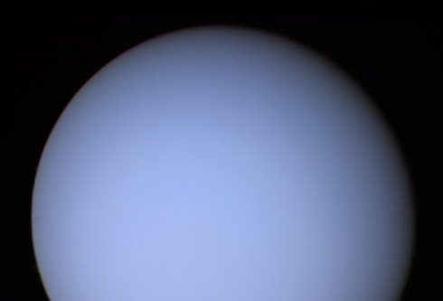

Uranus (19,6 UA), avec 14 masses terrestres, est la moins massive des géantes gazeuses. De façon unique parmi les planètes du système solaire, elle orbite le Soleil sur son côté, l'axe de sa rotation étant incliné d'un peu plus de 90° par rapport à son orbite. Son noyau est nettement plus froid que celui des autres géantes gazeuses et rayonne très peu de chaleur dans l'espace. Uranus possède 27 satellites connus, les plus grands étant Titania, Obéron, Umbriel, Ariel et Miranda. Sa période de révolution est d'environ 84 ans.